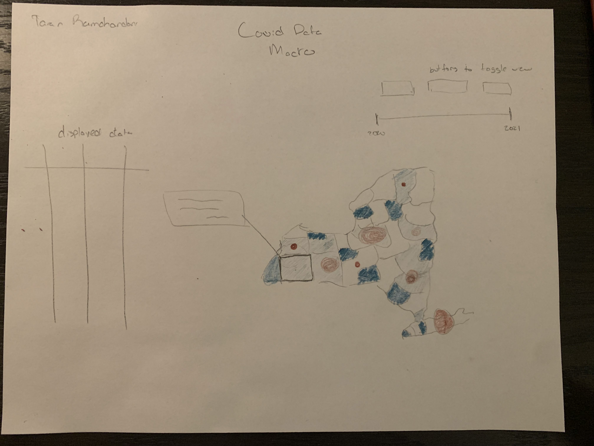
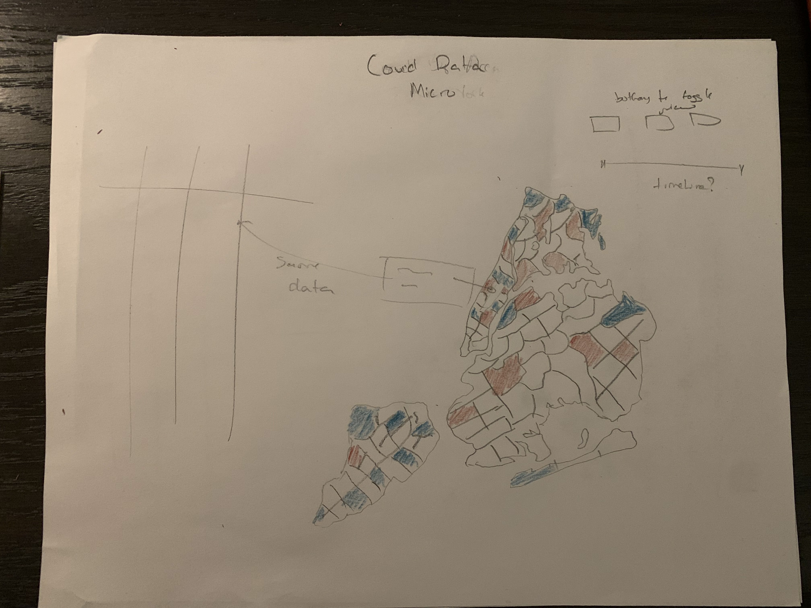
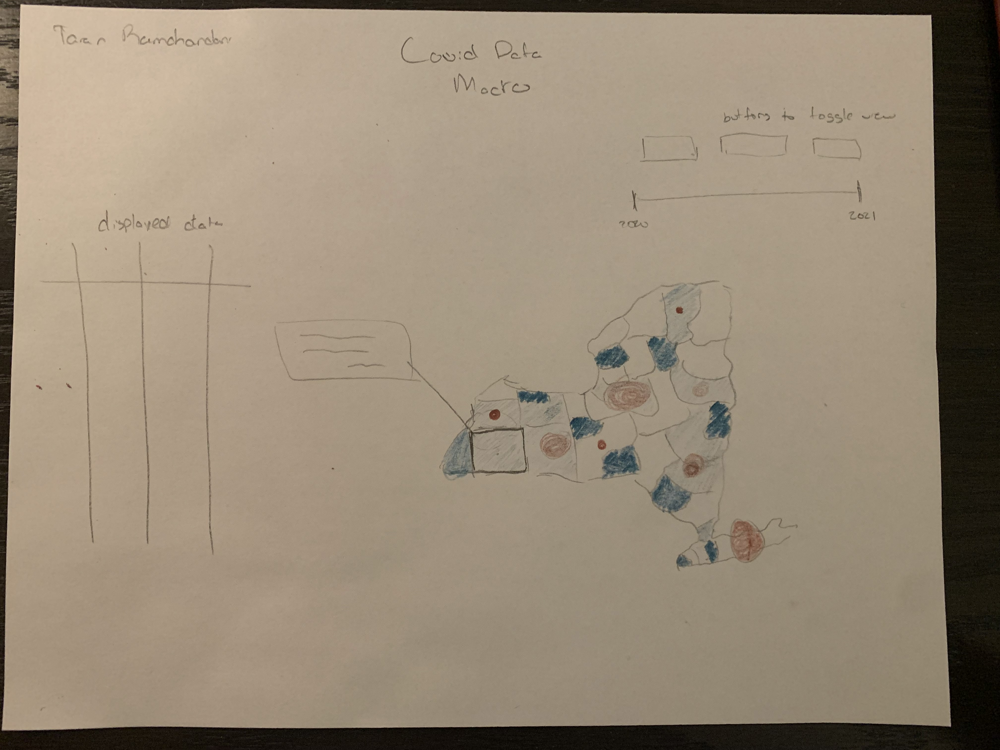
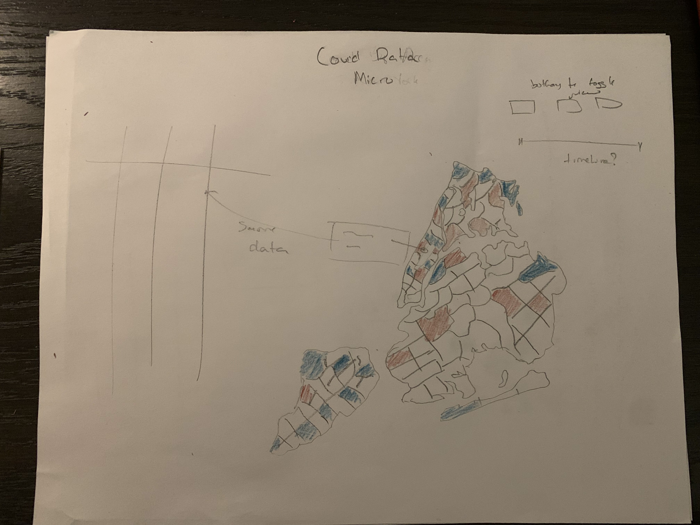

About Page-Amelia and Taran
4 Prototype Sketches

 



Sketch Explanations
Taran's sketches(right): My Sketches show New York as a state and also NYC. The Macro drawing has circles with varying shape and opacity to show the different rates of infection, and the background color is a second data column to compare to, such as vaccination rate. However, this layering is difficult, so we may opt for a more achievable approach of toggling views with buttons. I do think that the background color of the infographic is understandable because it clearly corresponds to a certain vaccination rate. The circles are a bit confusing so that part of the infographic isn't understandable. I think the cultural context for our data has no political intent, but our visualizations may reveal how covid has affected different minority groups in various regions of NYC. Finally, I think my design is fairly usable because of its simplicity. The Micro visualization uses the same background colors, and circles to represent data by zip code in NYC. Because of this, the understandability, the achievability, the cultural context and the usability is the same as the macro visualization.
Amelia's sketches(left): My sketches show a macro view of NYC, and a micro view of some neighborhoods in Manhattan. I represent vaccination rate, and covid cases by borough on the macro level, and neighborhood, on the micro level. I will use two different sets of color schemes to represent vaccination rate and number of covid cases. Certain colors will represent a high vaccination rate or covid cases per capita, and other colors will represent the lower end of the data. There will be an option to toggle between the two color schemes. I think my visualizations are understandable because they are simple and straightforward. I think my infographic plan is achievable, and not overwhelming. I think the cultural context for our data has no political intent, but our visualizations may reveal how covid has affected different minority groups in various regions of NYC. Finally, I think my designs are fairly usable because of their simplicity. The understandability, achievability, cultural context and the usability is the same as the micro and macro visualization.
Final Design
Because our prototypes were fairly similar, it was easy to settle on a unified approach for the website. Our website will examine covid cases per capita, and vaccinations per capita. On the macro level, we will represent the average covid cases and vaccinations for each borough. We will represent this data by displaying a map of NYC where each borough is a certain color based on how many covid cases there are. On the micro level, we will create two pages for each of the five boroughs. For each borough one page will be a zoomed in map of said borough that is colored in based on the covid cases for each neighborhood. The second page for each borough will be a zoomed in map of said borough that is colored in based on the vaccination rate for each neighborhood. For each page in our website, we might include a data table alongside the maps. We decided to take this approach, because it seemed achievable to make, and it seemed like it would be understandable to users. We opted for a more achievable approach of toggling views with buttons, so rather than choosing Taran's plan, we decided to use Amelia's plan. The layering of circle graphics, and color graphics shown in Taran's design, would be difficult to code, and therefore not achievable. Also, the layering of graphics might be confusing, and not understandable, so we decided not to include the circle graphics.
Vocabulary needed
Per Capita= for each person
Work Distribution
Our group will work together on the macro "walking skeleton". For the micro "walking skeleton" Amelia will complete the vacination rate skeleton, and Taran will complete the covid cases skeleton.
-
Pipeline Graphic